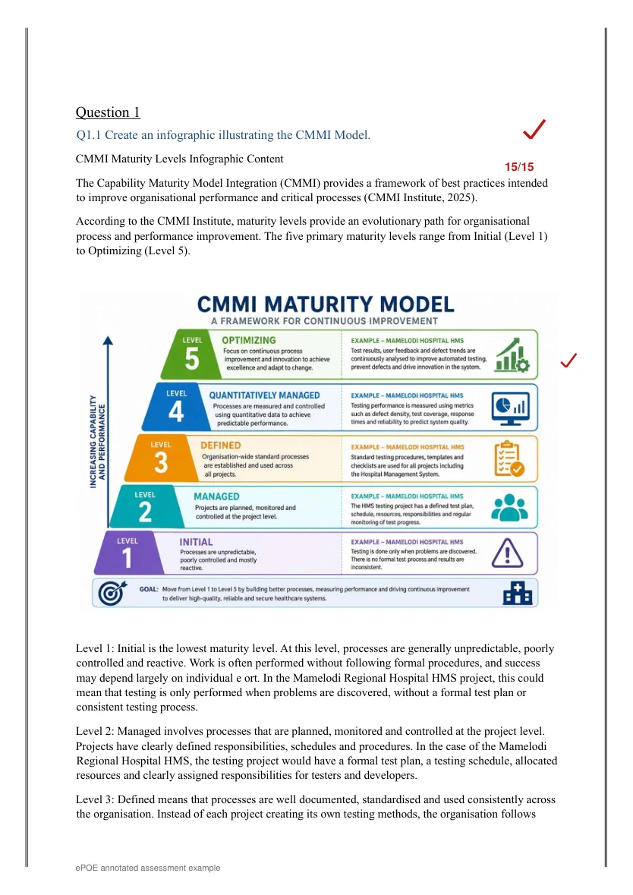

Clear expectations
Guides and rubrics explain deliverables and link task requirements to the relevant learning outcomes.
Practical tasks, clear expectations and constructive feedback help students connect what they learn to what they can create.
This selected Software Quality and Testing ICE activity asks students to apply concepts to a realistic hospital management scenario and demonstrate their understanding in more than one format.
SQAT6322 / Software Quality and Testing
The activity integrates topics from Learning Units 1–8. Before the questions, students see what the task is designed to develop and how each outcome relates to the assessment.

I use marking criteria, practical demonstrations, mock assessments and revision support to help students identify what is working and what still needs attention.
Guides and rubrics explain deliverables and link task requirements to the relevant learning outcomes.
Case studies, programming exercises and working projects allow students to demonstrate technical understanding.
I explain strengths, identify specific corrections and recommend practical next steps before future assessments.